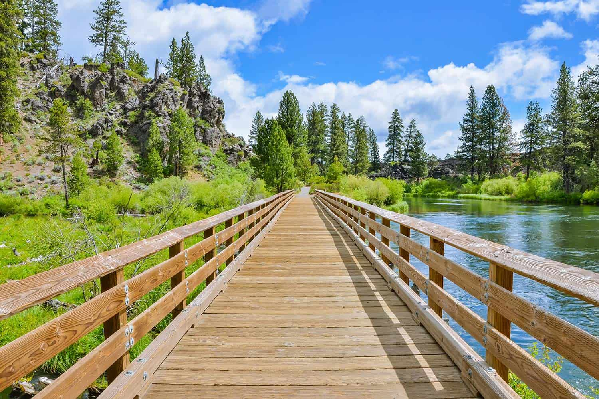
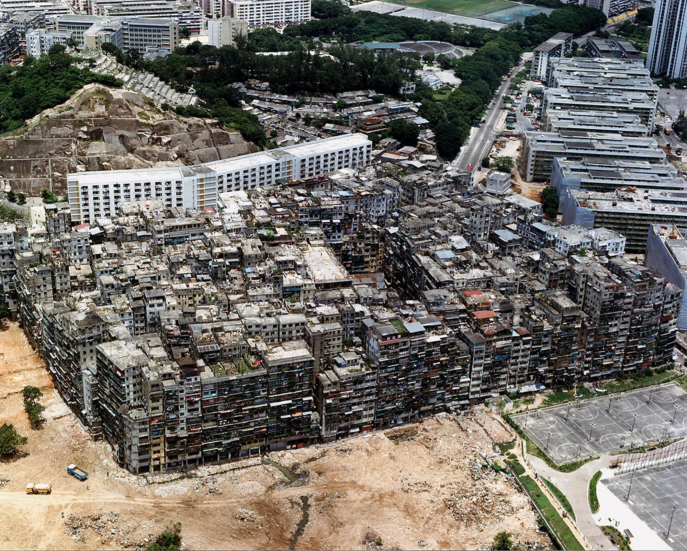
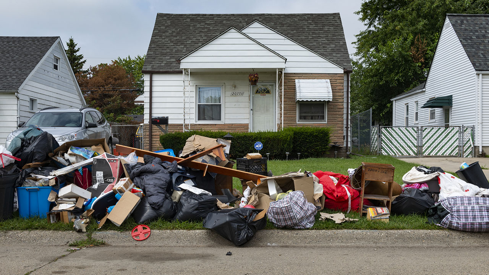
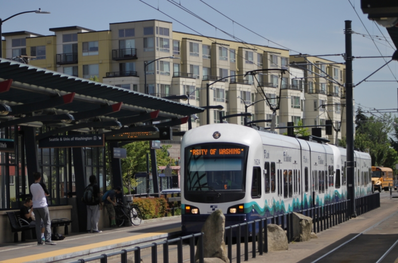

This project was requested by the Bend (Oregon) Parks and Recreation Department, just to see how their park space distributes across their population. Using 2019 ACS data, I visualized the population density, household income distribution, and formulated the "park space per person".

My first website was built as an informational story about an uncolonized, unincorporated urban anomaly in China. The now demolished city also inspired the band name for a really rad post-hardcore dad-band from the Bay Area.

This analysis attempts to visualize the communities of Tacoma, WA who are most vulnerable to the practice of eviction. Aligning Census data with the stressful attributes most often present in the act of eviction, this project was built to be used by outreach communities in Winter of 2021. Inspired by the pressure built up by the eviction moratoriums in place due to COVID-19, my hope was to create a study of value to those most in need of retaining their housing in Tacoma.

Where is low income housing being built? What are some methods for how to produce sustainable developent?